Collapse internal nodes
Overview
With this annotation type, users can :
- collapse at internal nodes
- show a small triangle at the collapsed nodes that is proportional to the number of leaves that the collapsed node contains
Please note
- a tree CAN NOT be collapsed at leaf nodes or the root
- this feature does NOT work in "slanted cladogram" mode
Datasets can be uploaded using the following button on the toolbar:
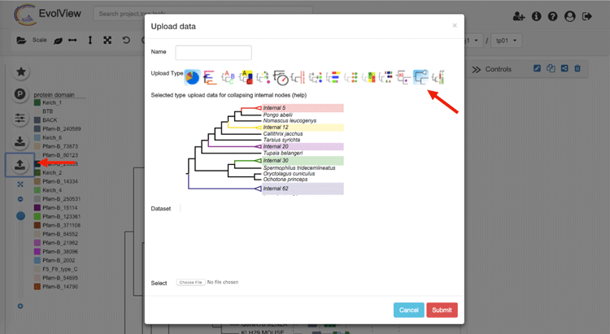
Here is an example:

Supported modifiers
We didn't introduce new modifiers for this annotation type; only the following universal modifiers related to legends are supported:
| Key (case insensitive) | Value | Description |
|---|---|---|
| !Groups or !LegendText | comma separated text | Legend texts; for example 'group_a,group_b,group_c' |
| !LegendStyle or !Style | rect or circle or star | shapes to be plotted before the legend texts; default = rect |
| !LegendColors or !Colors | comma separated color codes or names | colors to be applied to the shapes specified by LegendStyle; for example 'red,green,yellow' ; note the number of colors should match the number of legend fields |
| !Title or !Legend | text | title of the legend; default = name of the dataset |
| !ShowLegends | 0 or 1 | 0 : hide legends; 1 : show legends |
Specify/ define the internal node(s) to collapse
The data part contains a list of internal nodes at which the tree should collapse. There are three ways of specifying an internal node. Let's take the following tree as an example:
(A,(B,(C,(D,E)2DE)CDE3)BC3DE)ROOT;
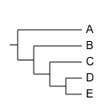
Now we try to collapse the tree at the last common ancestor of the leaf nodes "C" and "E". The simplest way is to upload a dataset with the following content:
C,E
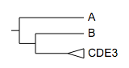
Alternatively, users can point to the internal node by using its "internal id" or name (if available); to find out such information, simply mouseover the internal node of interest:
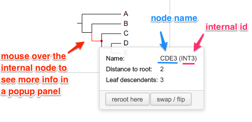
Therefore the above dataset is equivalent to:
## internal id
INT3
... or
## name of the internal node
CDE3
Please consult this wiki for more information on naming internal nodes.
Of course users can collapse at multiple internal nodes at the same time. Let's use a different tree:
( ( (A:0.4,B:0.3)90:0.2,(C:0.1,D:0.001)75:0.2 )90:0.3, E:0.44 )100:0.3;
This tree does not have named internal nodes, so we use leaf nodes to define the internal nodes at where the tree would collapses:
A,B
C,D
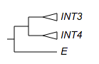
Size of the triangles
The height of a triangle is proportional to the number of leaf nodes that the corresponding internal node contains, it is calculated using the equation:
( 1 + log10( number of contained daughter nodes ) ) * vertical scale * 30%
while the width of the triangle is defined by "horizontal scale".
The "vertical scale" and "horizontal scale" can be changed/ specified using the toolbar (the "Basic" tab):
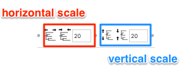
Customise the collapsed nodes
Naming collapsed nodes (work in progress)
By default, the text displayed next to the collapsed node is the node name (see the annotated figure above); if the node is not named, its internal name (INT###) will be used.
Please consult this wiki for more information on naming internal nodes.
In the future, we'll allow users to name the collapsed nodes directly in the dataset. For example:
C,D name=my collapsed node
Styling collapsed nodes
Users can customise the visualisation styles of the collapsed nodes using the grammar below. For example:
C,D name=my collapsed node,color=yellow,linewidth=2,linestyle=dashed
please note that HTML codes are also supported for the name; for example:
Scer|YPL277C,Spar|spar435-g2.1 name=my triangle,color=green,linewidth=2,linestyle=dashed
will be visualised as:
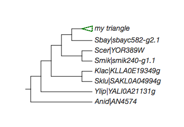
please note that we support HTML coded texts as the name of the collapsed node; for example:
Scer|YPL277C,Spar|spar435-g2.1 name=my <i style="color:pink">triangle</i>,color=green,linewidth=2,linestyle=dashed
when the HTML mode is enabled (by using the 'HTML' button  on the toolbar), the collapsed node will be visualised as:
on the toolbar), the collapsed node will be visualised as:
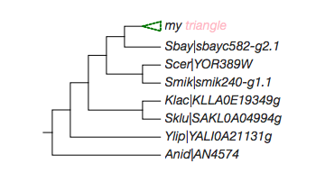
Here the tree (which also contains some HTML code):
((((((Scer|<i style="color:red;background-color:lightgreen">YPL277C</i>:1.234e-10,Spar|spar435-g2.1),Sbay|sbayc582-g2.1),(Scer|YOR389W,Smik|smik240-g1.1)),(Klac|KLLA0E19349g,Sklu|SAKL0A04994g)),Ylip|YALI0A21131g),Anid|AN4574);
please note that under HTML mode, exporting to graphical formats may NOT work. You may export your visualisation to a SVG file, but it can only be visualised correctly by browsers such as Firefox, Google Chrome and Apple Safari, NOT by Adobe Illustrator.
Add datasets to a collapsed tree
In general, collapsed internal nodes are treated as leaf nodes. An internal node can be identified by its internal id, or if available, node name. To find such information, users can simply mouse-over an internal node.
Here we use some examples to show how to add other datasets to a collapsed tree.
The tree:
( ( (A:0.4,B:0.3)90:0.2,(C:0.1,D:0.001)75:0.2 )90:0.3, E:0.44 )100:0.3;
... and the dataset for collapsing the tree (the same as the example above):
A,B
C,D
Branch colors
## note the branch color applies to the triangles too.
INT3 lightblue
E darkgreen
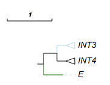
## 'ad' works but the 'prefix' and 'suffix' do not
## here INT3,INT4 defines the last common ancestor on the tree,
## 'ad' means that the color 'red' would be applied to all its descendants.
INT3,INT4 red ad
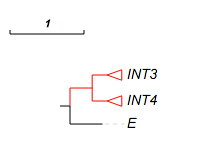
see here for more about branch colors.
Leaf colors and leaf background colors
## leaf colors
E darkred
INT3 pink
INT4 green
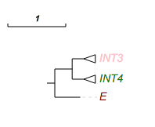
## leaf bk color
INT3 lightblue
INT4 lightgreen
E pink
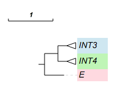
please see here for more information on leaf colors, and here for leaf background colors.
Color shapes and strips
##color strips
!type strip,check,rect,star,circle
## -- here A,B == INT3
A,B red,green,blue
## -- or directly use the internal id to point to an internal node --
INT4 lightblue
E darkgreen,grey,pink
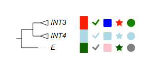
... in circular mode:
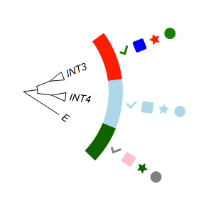
pie charts
leaf label decorations
!defaultstrokewidth 2
## -- use internal id of an internal node --
INT3 rect,pink:red check,pink
## -- use two leaf nodes to define an internal node --
C,D triangle,white:darker
## -- a leaf node
E rect,green:darker
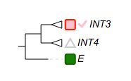
Group label
!grouplabel style=1,color=pink,show=1,fontsize=14
INT3,INT4 text=group 1,textorientation=vertical
E text=mammal,color=darkgreen,linewidth=4,fontsize=16,bkcolor=green
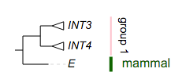
... in circular mode:
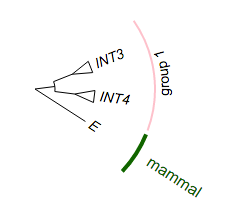
Dot plot
##dot plots
!groups dot 1,dot 2,dot 3
!colors #028482,#7ABA7A,purple
!title dot plots for a collapsed tree
# -- legends --
!legendstyle circle
!showLegends 1
## -- if !scalebycol is set to 1, each column of data will be scaled independently
!scalebycol 0
!byarea 1
# ---- grid and grid label / group label are also supported --
!grid 1
!gridlabel 1
# stroke and stroke color also work here
!defaultStrokeColor pink
#!defaultStrokeWidth 2
# here shape can be 'rect' or 'circle'; roundedcorner only applies to 'rect' shapes ...
!dotplots shape=circle,margin=2,colwidth=30,roundedcorner=3
## -- show data value works at here as well --
!showdataValue show=1,fontsize=12,fontitalic=0
!columnlabelstyle fontsize=12,fontbold=1
## here A,B == INT3
A,B 20,20,20
INT4 8,9,7
E 20,20,20
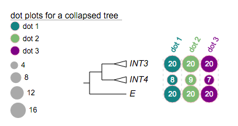
Heatmap
#heatmap
!legendTitle heatmap for a collapsed tree
!showLegends 1
#!defaultStrokeColor pink
#!defaultStrokeWidth 2
!colorgradient blue, yellow,red
!colorgradientMarkLabel 0,5,10,15,20,25
# -- heatmap column labels --
!showHeatMapColumnLabel 1
!heatmapColumnLabels e1,e2,e3,control
# -- heatmap --
!heatmap margin=2,colwidth=30,roundedcorner=2
# -- show data value
!showdataValue show=1,fontsize=12,fontitalic=0,textalign=start
!columnlabelstyle fontsize=12,fontbold=1,fontcolor=darkred
INT3 7,9,10,4
C,D -2,3,5,25
E 16,12,19,4
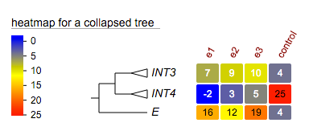
Column plot
## --
!columnplots strokewidth=2,fontbold=1,fontsize=16,textangle=-45,spacebetweencolumns=10
## a column of data starts with a 'namedcolumn', it defines global options for the corresponding column
namedcolumn=thermopiles,color=purple:darker
## followed by the following fragments
from=A,to=C
from=D,color=white:purple,text=?,width=20,style=circle,textangle=0
from=INT3,to=INT4
from=E,color=white:purple,text=?,width=20,style=circle,textangle=0
## -- 2nd column
namedcolumn=habitat,width=15
from=INT3,to=E,text=aquatic,textangle=-90,color=white:lightblue
## -- 3rd column
namedcolumn=fast evolving,color=lightgreen:darker
from=INT3,to=E
from=INT4,style=none,text=*,textangle=0,width=20
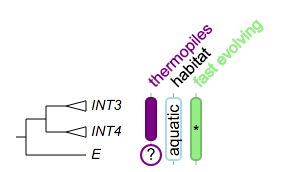